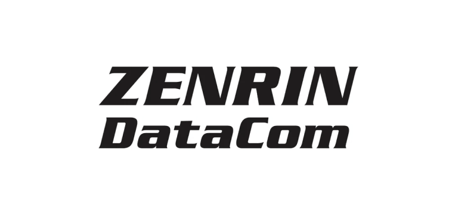
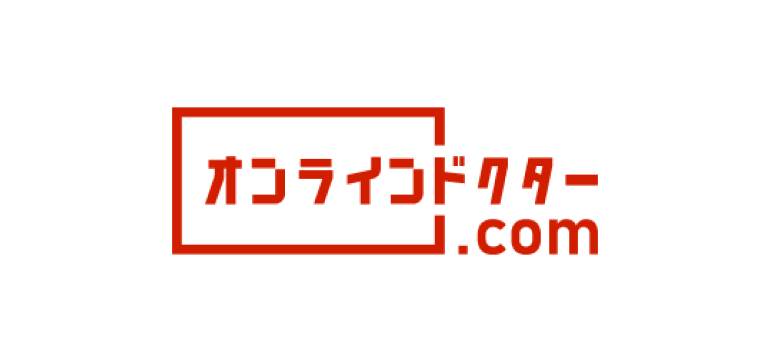

株式会社JV-ITホールディングス
日本本社
- 所在地
- 東京都新宿区四谷3-11 光徳ビル201
- 設立
- 2018年5月21日
- 資本金
- 3,310万円
- 売上高
- 4.12億円（2024年12月期）
- 電話番号
- 050-3196-3073
- メール
- contact@jv-it.jp
AI × オフショア20年ノウハウ
AI活用率50%以上を支えるエンジニア100名によるシステム運用と、ベトナム拠点20年の運用ノウハウを持つシステム保守会社。この二つでシステム運用を刷新し、ブラックボックス化したシステムも最短1ヶ月で引き継ぎます。
東証グロース市場 上場「売れるネット広告社グループ（証券コード：9235）」と戦略的業務提携。上場企業に選ばれる技術力と信頼性で、長期の保守運用をお任せください。
ドキュメントが不足し、システム内部の把握ができない。障害が起きても対応の手掛かりがなく、業務が止まるリスクを抱えている状態です。
何にいくら払っているのか分からない。作業実績や運用改善の提案がなく、コスト削減の余地があるのか判断できないままです。
特定エンジニアしか対応できず、休暇や離任のたびにリスクが再発。ナレッジが個人に紐付き、組織として蓄積されていません。
JV-ITのシステム運用保守は、AIを使いこなすエンジニア100名によるAI活用と、ベトナム拠点20年の運用実績を組み合わせた「ハイブリッド保守」です。定型業務はAIで効率化し、判断が必要な障害対応や改善提案は経験豊富なエンジニアが担当することで、コスト削減と品質維持を両立します。
24時間365日の自動監視で、サーバー・アプリケーションログを解析。異常検知の一次判定を自動化し、ノイズを削減します。
検知した事象をAIが過去事例と照合し、対応候補を提示。エンジニアが判断のうえ、必要な対応を実行します。
深いシステム理解が必要な障害・機能改修は、経験豊富なエンジニアが対応。ソースコード解析からリリースまで一貫します。
月次で運用状況・改善提案をレポート。PMがビジネス要件と技術負債の両面からロードマップを提示します。
本シミュレーターの金額は参考値です。実際の削減率はシステム構成・業務内容により異なります。正確な金額は無料の個別診断にてご案内します。
システム保守会社をお探しの方へ。担当の継続性・AI活用力・ブラックボックス対応という、JV-ITが選ばれる3つの理由をご紹介します。
オフショア業界の平均離職率20%に対し、JV-ITは3%（リモートワーク導入・評価制度廃止による定着）。担当エンジニアが替わらないため、システムのナレッジが個人に留まらず、属人化・引き継ぎロスのない継続保守を実現します。
Anthropic Academy を修了したエンジニアが100名以上在籍。独自の「Jai1 Framework」で Claude Code / Codex / Gemini / Cursor を統合し、監視ログ分析・障害一次判定・ドキュメント自動生成など、保守業務の自動化と品質維持を両立します。
前ベンダーの資料が不足していても、ソースコード・稼働環境・運用ログをAIで解析し、最短1ヶ月で引き継ぎを完了します。段階的な運用移管により、業務停止リスクなしに新体制へ移行できます。
上場企業からスタートアップまで、業種を問わず継続的な保守運用をお任せいただいています。





前ベンダー撤退・属人化・ブラックボックス化――さまざまな保守課題を、AI活用と定着した体制で解決してきました。
※各事例の月額は当社実績値です。個別のシステム規模・要件により変動します。
引き継ぎだけ・障害対応だけのスポット依頼もOK。まずは小さく始められます。
相談してみる24時間365日の自動監視。AIによる異常検知の一次判定でノイズを削減し、重要なアラートに集中できる運用体制を構築します。
障害検知から復旧、原因分析、再発防止まで一貫対応。エスカレーションフローと責任分界を明確化し、判断遅れをなくします。
運用中のシステムへの機能追加・改修に対応。要件整理から設計・実装・テスト・リリースまでを、既存業務を止めずに実施します。
クラウドインフラの設計・構築・運用。コスト最適化提案、災害対策・バックアップ設計を提供します。
脆弱性診断、パッチ適用、アクセス権限管理。セキュリティインシデントの検知・対応を含む、継続的なセキュア運用を提供します。
前ベンダーからのスムーズな引き継ぎ。ドキュメント不足でも、ソースコード解析と現行運用者ヒアリングで最短1ヶ月で完了します。
サービス範囲・システム規模に応じて、3つのプランからお選びいただけます。個別要件に合わせたカスタマイズも可能です。
12〜30万円/月
監視・軽微な障害対応を中心とした、コスト重視のプラン
30〜80万円/月
障害対応から追加改修まで、多くの企業様に選ばれる標準プラン
80〜150万円/月
フルマネージド運用、大規模システム向け
※金額はシステム規模・要件により変動します。個別お見積りを承ります。契約期間・解約条件は個別協議のうえ決定します。
「これ、今やるべき？」と迷っていた保守業務が、月次レポートの改善提案で優先順位が見える化。現場と経営の判断が揃うようになりました。
情報サービス業
担当が変わるたび不安だった保守が、離職の少ない体制のおかげで、誰が見ても運用が回るようになりました。ナレッジも組織側に残っています。
メーカー
「これは本当に必要？」と悩んでいた保守作業が整理され、無駄が可視化。全体コストも想定以上に抑えられました。
小売業
「何から手をつければいいか分からない」状態のブラックボックスから、現状把握と優先度整理まで一緒に踏み込んでくれたのが決め手でした。
医療関連企業
30〜60分のオンライン相談。現状の課題と目指す状態をヒアリングします。
システム構成・運用体制・課題を詳細に把握。改善余地の分析を行います。
個別要件に合わせたプランと料金をご提示。契約条件も透明にご説明します。
最短1ヶ月で引き継ぎを完了。段階的な移管で業務停止リスクをゼロに抑えます。
運用開始後は月次レポートと改善提案で、システムを継続的に改善します。
小規模のWebサイトから、複数サーバ・複数サービスで構成された大規模基幹システムまで対応可能です。まずはご相談ください。既存構成の診断からご支援できます。
可能です。運用保守の全面委託だけでなく、「引き継ぎのみ」「障害発生時のスポット対応のみ」「特定機能の改修のみ」など、必要な範囲だけのご依頼も承ります。まずは小さく始め、状況に応じて範囲を広げることもできます。
現行システムの解析・調査から、日次運用・監視、障害対応、機能改修・追加開発、サーバー／インフラ運用、セキュリティ・パフォーマンス最適化まで一貫して対応します。詳しくは対応するサービス範囲をご覧ください。
もちろん可能です。相談時点で他社契約の解約義務はありません。ご相談内容は秘密保持契約のもと厳重に管理いたします。また、既存ベンダーや社内担当者と並行しての依頼・作業も可能です。段階的な移行にも対応します。
AIは監視ログの分析・一次判定・レポート作成などに活用します。本番環境への変更適用やデータ削除など、重要な操作はエンジニアの承認が必須です。データの取り扱いはお客様のポリシーに準拠します。
システム規模と情報の揃い方によりますが、標準的なケースで最短1ヶ月です。ドキュメントが乏しい場合でも、ソースコード解析と現行運用者ヒアリングにより、段階的に引き継ぎます。
はい、可能です。ソースコード解析ツールとAIによる構造理解を組み合わせ、リポジトリ・稼働環境・運用ログから運用の実態を再構築します。ブラックボックス化したシステムの引継ぎ実績が多数あります。
可能です。日本本社の日本人PMが窓口を担当し、ベトナム側との連携をブリッジします。日本語ドキュメント・日本語コミュニケーションで完結できる体制を整えています。
契約期間・解約条件は個別協議のうえ決定します。短期のPoC契約から、長期のフルマネージド契約まで柔軟に対応可能です。
サービス範囲・システム規模・対応時間帯（営業時間内 or 24時間365日）などから算出します。3プランを基本とし、個別要件があればカスタマイズも承ります。まずは無料相談で概算をお伝えします。
障害対応のスピード、既存システムの解析力、引き継ぎ実績（ブラックボックス対応）、担当の継続性（離職率）、対応範囲（監視〜改修）を確認するのが重要です。JV-ITはAIと20年の運用ノウハウでこれらを一貫してご提供します。
日本本社
ベトナム法人（ホーチミン）
お問い合わせいただいた内容には、1営業日以内にご返信いたします。まずはお気軽にご相談ください。